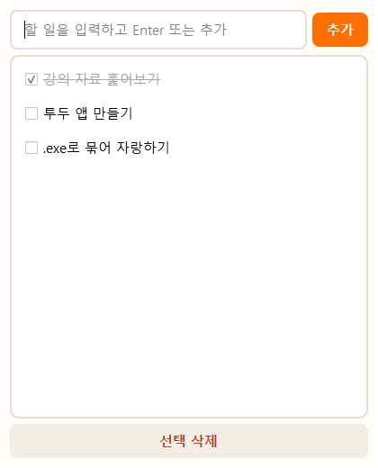
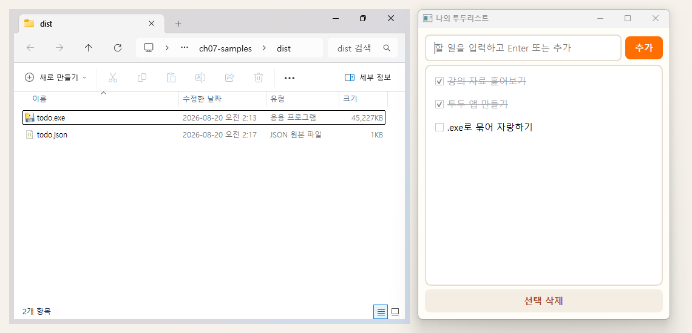

내 PC에서 도는 —
진짜 프로그램(.exe.app)
PySide로 창을 그리고, PyInstaller로 묶어 —
더블클릭하면 열리는 나만의 프로그램.
웹페이지였다면, 이제는 내 PCMac에 사는 프로그램
웹페이지는 인터넷에 삽니다.
이번엔 — 내 PCMac에 사는 프로그램.
프로그램 3개 — 점점 세상과 연결됩니다
투두리스트
내 PC 안에서만 도는 로컬 프로그램. 창·버튼·저장 — 데스크톱의 기본기.
주식 트레이딩 앱
강의 제공 가상 시장 서버와 API 통신 — 시세 조회·매수매도·리더보드 경쟁.
코인 시세 차트
업비트의 진짜 공개 API로 실시간 코인 시세를 한 차트에.
로컬에서만 → 연습용 서버와 통신 → 진짜 세상 데이터. 같은 앱 구조에 통신만 한 겹씩 늘어납니다.
검은 터미널에 — 버튼과 창을 입힌다
CLI — 터미널 그대로.
GUI — 같은 파이썬에 창을 입힌 것.
3장의 가위바위보·변환기도 전부 검은 터미널이었습니다. 이번엔 거기에 창·버튼·목록을 입힙니다.
PySide로 창을 그리고, PyInstaller로 묶는다
PySide6 — 창을 그린다
파이썬으로 창·버튼·입력칸을 그리는 도구. Qt라는 유명한 GUI 도구의 파이썬 버전.
- "이 버튼을 누르면 ~" 만 짜면 됨
- 코드는 Claude가 — 우리는 무엇을 만들지만
- 운영체제 그대로의 모양 — 윈도우다움맥다움
PyInstaller — .exe.app로 묶는다
파이썬으로 만든 .py 파일을 .exe.app 한 덩어리로 묶어줍니다. 파이썬이 없는 PC에서도 그대로 동작.
- 명령 한 줄 —
pyinstaller --onefile --windowed - 한 번 묶는 데 1~2분 — 시간이 좀 걸림
- 파일 하나로 친구한테 보내기 (같은 OS끼리)
둘 다 명령 한 줄로 설치. 코드는 Claude가 씁니다 — 우리는 무엇을, 어떻게 동작할지만 말합니다.
두 도구 설치 — 한 줄이면 끝
Python — 이미 깔려 있다
3장에서 깐 Python을 그대로 씁니다. 새 PowerShell터미널 창에서 pythonpython3 --version — 3.x 버전 숫자가 뜨면 OK.
- 안 뜨면 — 3장 Python 설치 슬라이드의 PATH 점검
- 두 도구 설치도 claude에게 — 부탁 한 줄이면 끝
- claude는 1장 그대로 — 로그인돼 있으면 준비 끝
PySide6랑 PyInstaller 설치해줘. 끝나면 잘 깔렸는지 확인까지 해줘.
이때 claude가 실제로 치는 명령은 pippip3 install pyside6 pyinstaller 한 줄(참고). PySide6는 다운로드가 좀 커서(수십 MB) 3~5분 — 끝에 Successfully installed가 뜨면 완료입니다.
껐다 켜도 남아 있는 — 내 투두리스트.
입력칸에 할 일을 적고 버튼을 누르면 목록에 쌓이고, 체크하면 줄이 그어지는 프로그램. 닫았다 다시 열어도 목록이 그대로 — 데스크톱 프로그램의 기본기가 전부 들어 있습니다.
폴더 → .py → 동작 확인 → .exe.app
기본 폴더 만들기 — c:\lecture\todo~/lecture/todo
Claude로 .py 만들기 — 3문장(목표·제약·내 수준)으로 시작
pythonpython3 todo.py — 띄워 보기 — 막히면 화면 보여주며 다시 대화
PyInstaller로 .exe.app로 묶기 — dist 폴더에 todo.exe.app 한 덩어리
더블클릭 — 끝 — 친구한테 보내봐도 OK
.exe.app로 묶는 건 마지막 단계 — 한 번 묶는 데 1~2분씩 걸립니다. 먼저 .py로 동작이 다 맞춰져야 합니다 — 80%는 .py에서 끝납니다.
앞서 익힌 — 3문장이면 시작한다
목표 · 제약 · 내 수준
프롬프팅에서 익힌 3문장. 데스크톱 프로그램에도 그대로 — 매뉴얼이 없어도 시작이 됩니다.
- 목표 — 무엇을 만들지 (기능까지)
- 제약 — PySide6로, .exe.app로 묶을 것
- 내 수준 — "처음이니 설명하며"
투두리스트 데스크톱 앱을 todo.py로 만들어줘. 입력칸에 할 일을 적고 추가 버튼(엔터도)으로 목록에 쌓고, 체크하면 줄이 그어지고, 삭제 버튼도 있어. 종료해도 목록이 유지되게 같은 폴더의 todo.json에 자동 저장해줘. PySide6로 만들고, 나중에 PyInstaller로 .exe.app로 묶을 거야. 나는 PySide 처음이니까 설명하며 진행해줘.
뼈대는 늘 같음: "무엇을 / PySide6+.exe.app / 처음이니 설명하며" — 덱 2·3에서도 이 뼈대를 그대로 씁니다.
.exe.app로 묶기 전 — python으로 띄워보기
왜 먼저 .py?
- .exe.app 생성은 1~2분 — 매번 묶으면 느림
- .py로 띄우면 즉시 실행
- 동작·모양이 다 맞춰진 뒤에 묶는다
대부분의 시간은 이 단계 — Claude와 대화하며 다듬는 시간.
꼭 껐다 다시 켜보세요 — 목록이 살아 있으면 저장 성공. 동작이 이상하면 그 화면을 캡처해 Claude에게 "여기가 이상해"라고 그대로 보여주면 됩니다.
한 번에 하나씩 — 내 것으로 만든다
"다크모드로 바꿔줘"
색·글꼴·크기 — 보이는 대로 일상어로 부탁하면 됩니다.
"마감일도 넣어줘"
마감일·중요 표시·완료 항목 아래로 정렬 — 하나씩 추가.
"창 크기 기억해줘"
시작 위치·크기 기억, 빈 입력 방지 — 프로그램다움의 한 끗.
한 줄 부탁 → 실행해 확인 → 다음 한 줄. 2~3바퀴면 꽤 내 것 같아집니다.
PyInstaller — 한 줄로 .exe.app 완성
실제로 일어나는 일 (참고)
claude가 대신 치는 명령은 pyinstaller --onefile --windowed todo.py — 진행 메시지가 쏟아져도 가만히 1~2분.
- 결과는
dist\todo.exedist/todo.app하나 - 같은 OS의 다른 PC에 옮겨도 동작 — 파이썬 없어도. (Win↔Mac은 따로 빌드)
--onefile= 한 덩어리 ·--windowed= 실행 시 검은 콘솔 창 안 뜨게
todo.py를 PyInstaller로 더블클릭해 실행되는 .exe.app 한 덩어리로 만들어줘. 끝나면 실행해서 보여줘.
명령·옵션은 외울 필요 없습니다 — 왼쪽 카드는 claude가 대신 쳐 주는 실제 명령(참고)입니다. 할 일 데이터(todo.json)는 실행 파일 옆에 생깁니다. Mac은 자체 서명 한 줄을 같이 시키면 깔끔 — codesign --deep --force --sign - dist/todo.app.
경고창이 뜬다 — 정상이다.
내가 만든 .exe는 "서명"이 없어 Windows가 한 번 멈춰 묻습니다. 모르는 인터넷 .exe였다면 조심할 일이지만, 방금 내가 만든 거니 — "추가 정보" → "실행".
내가 만든 .app은 "서명"이 없어 Gatekeeper가 한 번 멈춰 묻습니다. 모르는 인터넷 앱이었다면 조심할 일이지만, 방금 내가 만든 거니 — Finder에서 우클릭 → 열기(첫 실행 1회).
codesign --deep --force --sign - dist/todo.app더블클릭하면 — 이런 창이 뜬다


여기까지 하면 — 내 PC에 사는 첫 프로그램 완성. 막히면 에러·화면을 그대로 캡처해 Claude에게.
자주 걸리는 — 4가지 + 해법
pippip3 install pyside6를 그 PowerShell터미널 창에서 한 번 더.pythonpython3 todo.py를 PowerShell터미널에서 직접 실행하면 에러가 남음 → 빨간 줄을 통째로 복사해 Claude에게. 빌드 에러도 같은 방법.codesign --deep --force --sign - dist/todo.app.xattr -dr com.apple.quarantine dist/todo.app 한 줄로 풀림.내 PC에 — 첫 프로그램이 생겼다
웹페이지는 인터넷에 살지만, 투두리스트는 내 컴퓨터에 삽니다. 창을 그리고(PySide) 한 덩어리로 묶는(PyInstaller) 기본기 — 이 덱의 앱 구조가 이 장 나머지 두 앱의 뼈대입니다.